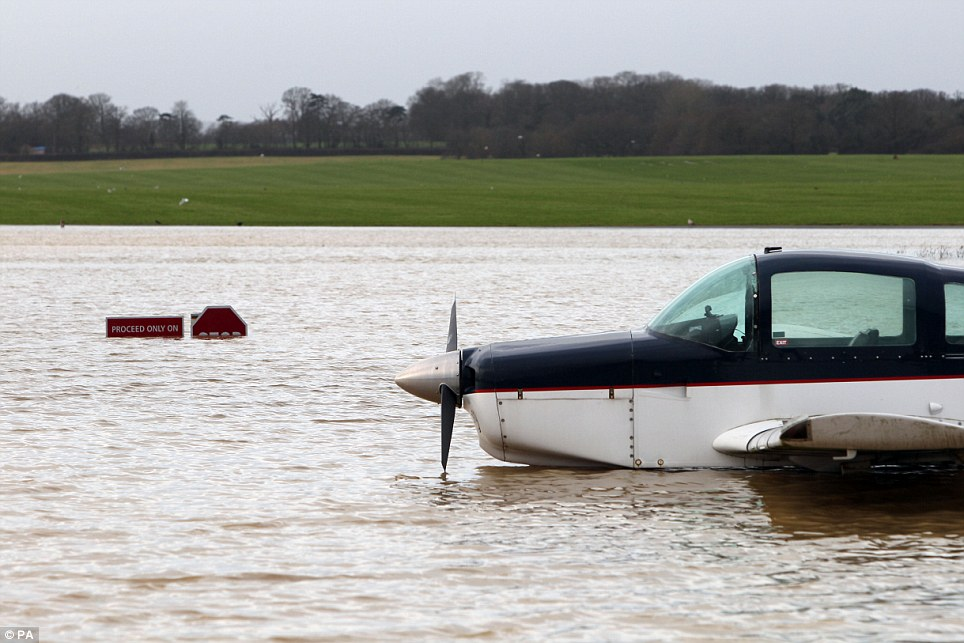

disregard
-Why is weather forecasting important?-
Weather forecasting is important because it allows commanders adequate time to make operational decisions and enables them to take a certain amount of risk. Risk vs benefit is always something that is considered in the world of Army Aviation because commanders need to make a decision of how much is worth losing for the benefit of winning over the enemy.
If we are forecasting severe thunderstorms this afternoon, you would bet that the commanders would like to know ahead of time so that they can shelter their aircraft from hail damage. Or if we are expecting a heavy rain event and flooding, the commander may want all of his aircraft to takeoff and land at another location. For me, many briefings are conducted in a tactical environment (as seen in the picture) were we would be briefing out of a tent. These environments enable us to be ready to deploy at a moment’s notice and continue to do our job, even with limited resources.
-How do you forecast weather?-
There are many products and models that can be used to forecast upcoming weather conditions. However, sometimes this can be challenging. Many times we look at the direction of wind flow at a certain altitude and assess how bad the conditions will be as well as how long they will be affecting the location.
We also rely heavily on radar to see incoming rain and values that are alarming and could cause severe events such as a tornado. When the radar begins to hook, you will usually see a tornado in that area.
Models also provide a perspective of what is happening in the atmosphere. This is useful to see long-range weather that could affect your location within the next week.
disregard
